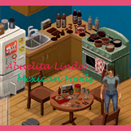
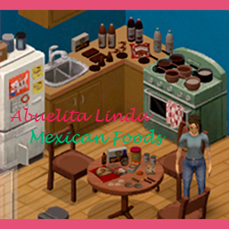

Sobre Abuelita Linda
About Abuelita Linda
Este mod agrega platillos, bebidas y dulces tradicionales de México a Project Zomboid.
This mod adds traditional Mexican dishes, drinks, and sweets to Project Zomboid.
Este mod agrega platillos, bebidas y dulces tradicionales de México a Project Zomboid.
This mod adds traditional Mexican dishes, drinks, and sweets to Project Zomboid.
